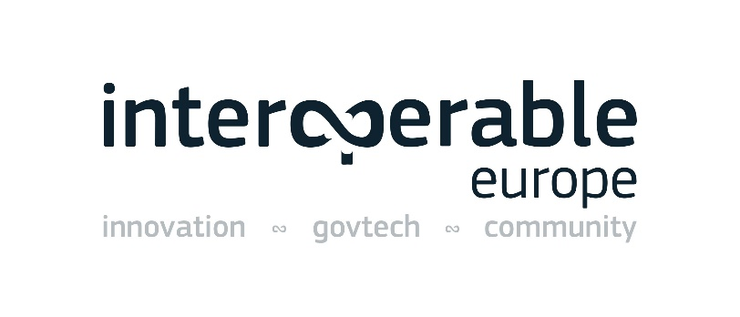

Digital Public Administration factsheet 2021
France
Table of Contents
Digital Public Administration factsheet 2022
2 Digital Public Administration Highlights 10
3 Digital Public Administration Political Communications 13
4 Digital Public Administration Legislation 22
5 Digital Public Administration Governance 31
6 Digital Public Administration Infrastructure 34
7 Cross-border Digital Public Administration Services for Citizens and Businesses 48
Country
Profile
1
Country Profile
Digital Public Administration Indicators
The following graphs present data for the latest Digital Public Administration Indicators for France compared to the EU average. Statistical indicators in this section reflect those of Eurostat at the time the Edition is being prepared.
Percentage of individuals using the internet for interacting with public authorities in France | Percentage of individuals using the internet for obtaining information from public authorities in France | ||
Percentage of individuals using the internet for downloading official forms from public authorities in France | Percentage of individuals using the internet for submitting completed forms to public authorities in France | ||
Interoperability State of Play
In 2017, the European Commission published the European Interoperability Framework (EIF) to give specific guidance on how to set up interoperable digital public services through a set of 47 recommendations. The picture below represents the three pillars of the EIF around which the EIF Monitoring Mechanism was built to evaluate the level of implementation of the EIF within the Member States. It is based on a set of 71 Key Performance Indicators (KPIs) clustered within the three main pillars of the EIF (Principles, Layers and Conceptual model), outlined below.

Source: European Interoperability Framework Monitoring Mechanism 2021
Source: European Interoperability Framework Monitoring Mechanism 2021
Source: European Interoperability Framework Monitoring Mechanism 2021
Source: European Interoperability Framework Monitoring Mechanism 2021
eGovernment State of Play
The graph below presents the main highlights of the latest eGovernment Benchmark Report, an assessment of eGovernment services in 36 countries: the 27 European Union Member States, as well as Iceland, Norway, Montenegro, the Republic of Serbia, Switzerland, Turkey, Albania and Macedonia (referred to as the EU27+).
The study evaluates online public services on four dimensions:
- User centricity: indicates the extent to which a service is provided online, its mobile friendliness and its usability (in terms of available online support and feedback mechanisms).
- Transparency: indicates the extent to which governments are transparent about (i) the process of service delivery, (ii) policy making and digital service design processes and (iii) the personal data processed in public services.
- Cross-border services: indicates the extent to which users of public services from another European country can use the online services.
- Key enablers: indicates the extent to which technical and organizational pre-conditions for eGovernment service provision are in place, such as electronic identification and authentic sources.
The 2022 report presents the biennial results, achieved over the past two years of measurement of all nine life events used to measure the above-mentioned key dimensions. More specifically, these life events are divided between seven ‘Citizen life events’ (Starting a small claim procedure, Moving, Owning a car, Health measured in 2021, and Career, Studying, Family life, measured in 2020) and two ‘Business life events’ (Regular Business Operations, measured in 2021, and Business start-up, measured in 2020).

Source: eGovernment Benchmark Report 2022 Country Factsheet

Digital Public Administration Highlights
2
Digital Public Administration Highlights
| Digital Public Administration Political Communications |

In December 2021, the French State launched metiers.numerique.gouv.fr, a specific website dedicated to attracting digital talents in the public sector.
In November 2021, the French Government adopted its Action Plan on Free Software and Digital Commons. Through this Action Plan, free and open source software were described as one of the main levers for the digital transformation of administrations.
The French Government has adopted a Roadmap for the convergence of digital and ecological transitions in February 2021. In this context, a new Inter-ministerial Mission for an Eco-Responsible Digitalisation was set-up in order to help administrations build a more environmental-friendly digital transformation.
| Digital Public Administration Legislation |

| Digital Public Administration Governance |

In 2021, the Digital Transformation of Territories (TNT) programme replaced the former Concerted Development of Territorial Digital Transformation (DCANT) program, which ended in 2020. TNT is a cooperation program between the central government and local authorities to address the challenges of digital transformation of local authorities. A specific governance committee was set-up to monitor the progress of the program. Chaired by the Minister of Public Sector Transformation and the Civil Service, this political committee also involves the Minister for Territorial Cohesion and Relations with Local Government as well as high-level representatives from local authorities.
| Digital Public Administration Infrastructure |

Two research projects on AI were conducted in 2021 thanks to the partnership between the AI Lab and the National Institute for Research in Digital Science and Technology: one project for the Naval Hydrographic and Oceanographic Service (SHOM), implementing machine learning algorithm to automate outlier detection and control the topo-bathymetric lidar point cloud datasets, and one project developed for the French Court of Cassation and implementing NLP methods to help detect divergences in the applications of the law (where the same legal texts is applied differently by two rulings), which is a core mission of the Court of Cassation. In 2021, through the French Recovery Plan, numerous other projects involving AI solutions were funded (cf. Chapter 6).

Digital Public Administration Political Communications
3
Digital Public Administration Political Communications
Specific political communications on digital public administration
Metiers.numerique.gouv.fr
In December 2021, the French State launched a broad communication on the creation of metiers.numerique.gouv.fr, a specific website centralizing IT jobs in the public sector. In a highly competitive and tense economic sector, the State enhanced its attractiveness as a tech employer with this website.
Action Plan on Free Software and Digital CommonsIn November 2021, the French government adopted its Action Plan on Free Software and Digital Commons. This Action Plan contributes to the digital transformation of the public service with three objectives: (i) increasing awareness and use of free software and digital commons in the public sector, (ii) developing and supporting the opening up of administrations’ source codes, and (iii) using free and open source software to attract digital talents in the public sector.Berlin Declaration on Digital Society and Value-Based Digital Government
In December 2020, the French government signed the Berlin Declaration on Digital Society and Value-Based Digital Government, thus re-affirming its commitment – together with other EU Member States – to foster digital transformation in order to allow citizens and businesses to harness the benefits and opportunities offered by modern digital technologies. The Declaration aims to contribute to a value-based digital transformation by addressing and strengthening digital participation and digital inclusion in European societies.
Tech.gouv
On 16 April 2019, the French government launched Tech.gouv, a new programme led by the Interministerial Digital Directorate (DINUM), with the support of all Ministries, which aims to speed up the digital transformation of public services. This agile and collaborative programme aims to help the State seize the opportunities offered by digital technologies to improve public services and bring the administration closer to citizens, businesses and civil servants. Tech.gouv addresses six priority issues: simplification, inclusion, attractiveness, command, economies and alliances. The strategy is structured around eight missions:
- Four missions related to digital products and services to develop new uses (labelling, digital identity, data and infrastructure); and
- Four missions related to the promotion of digital expertise to accelerate public service transformation (pilot, talents, factory and transformation).
Tech.gouv is accompanied by a three-year action plan centred on 35 priority projects and actions.
National Strategy for an Inclusive Digital Society
In September 2018, the National Strategy for an Inclusive Digital Society and the initiative Digital in Common(s) were launched on the occasion of the first event bringing together all actors of digital mediation. The objective is to train 1.5 million people in digital literacy to reduce inequalities and provide equal opportunities for all throughout the country. With 13 million French people who still do not use the internet, or only to a limited extent, including 6.7 million who never connect to the internet, the Government faces a real challenge to carry out the digital transformation of the State. The National Strategy is based on four main approaches:
- Detecting audiences struggling with digital technology;
- Offering human support in the process;
- Training those who wish to do so thanks to the Digital Pass; and
- Strengthening the players in digital mediation.
Public Action 2022
The Public Action 2022 programme was launched in September 2017 by the French Prime Minister Édouard Philippe, with the aim to modernise the State. The programme has three objectives: (i) improving the quality of public service provided to the user; (ii) improving the working conditions of staff, and (iii) helping to control the budget. To achieve these objectives, the government developed a National Strategy for the Transformation of Public Action, published during the second meeting of the Interministerial Committee for Public Transformation in October 2018. The Strategy includes precise and quantifiable indicators to measure and report on the success of the programme. French citizens will thus be able to monitor the progress of the reforms. The ambition is to have a closer, simpler and more efficient State to better meet citizens' expectations, with transparency in monitoring being a guarantee of the success of reforms.
The National Strategy is based on four streams guiding the government's action:
- Public services closer to users;
- Simpler and more accessible approaches;
- Clearer and more effective public intervention; and
- A State that transforms itself.
A considerable part of the action in the field involves digital solutions, thus contributing to the promotion and development of digital government.
In June 2019, the Prime Minister launched the second part of the initiatives aimed at public transformation, inspired by citizens’ contributions to the ‘Grand débat national’, a public consultation conducted earlier in the year. This second part is centred on three priority commitments: (i) a simpler and more responsive administrative organisation; (ii) closer and more accessible administrations, and (iii) a more efficient administration, able to leverage digital tools for the benefit of end-users, public servants and public policies.
This over-arching strategy has been implemented by each Ministry through ministerial transformation plans that define the modalities for implementing major government reforms (milestones, achievements and impact indicators). The monitoring of the implementation of these reforms is carried out by the Interministerial Directorate for Public Transformation (DITP), alongside the Offices of the Prime Minister and the President of the Republic, and takes the form of high-level follow-up meetings scheduled at regular intervals. Since the programme’s launch, six Interministerial Committees for Public Transformation have been organised, the latest one having taken place in July 2021, with renewed commitments for the State’s digital transformation.
Ministerial Transformation Plans
Following the roadmap that the Prime Minister sent to each member of the government at the beginning of his term of office, each Minister has now drawn up a Ministerial Transformation Plan, for which he/she is responsible, to ensure the implementation of the main reforms. After the design and trade-off phase, the 2nd Interministerial Committee for the Transformation of Public Action (CITP) was meant to accelerate the implementation of the Ministries' roadmaps and their Transformation Plans. These plans are monitored at the highest level to ensure that the reforms undertaken are translated into concrete results. The ambition is to have a closer, simpler and more efficient State to better meet citizens' expectations.
Ministerial Digital Transformation Plans
As part of the Public Action 2022 initiative, the Minister for the Armed Forces defined a roadmap in 2017 setting three objectives for the digital transformation of the Ministry:
- Ensure operational superiority and information literacy in theatres of operations;
- Strengthen the efficiency of support and facilitate the daily lives of staff; and
- Improve the relationship with citizens and the attractiveness of the Ministry.
This Ministerial Digital Transformation Plan was the first to be presented and sets out actions in a concrete way, as the Minister for the Armed Forces reminded: “After four months of work, we are now entering the action phase. This plan offers concrete measures to fully achieve our objectives and address the digital transformation”.
At the same time, the education system is engaged in profound pedagogical and organisational transformations, from nursery schools to higher education, requiring to thoroughly take advantage of the potential of digital technology. Digital technology represents a powerful lever for transformation to support ministerial policy in all its dimensions, which are: (i) the pedagogical transformation, digital technology being at the service of learning and evaluation; (ii) training in the challenges and professions of tomorrow; (iii) simplification of relations with users, and (iv) modernisation of the functioning of the State with redesigned information systems. In addition, today, the Ministry of National Education, Youth and Sport produces a very large amount of data related to school life, student assessments and results, and work and homework performed by students. A wide variety of personal digital data is collected, stored and processed by a multitude of actors (schools and educational institutions, academic services, local authorities, and private partners providing educational resources and digital services). In this context, the Ministry must ensure that the flow, processing and storage of school data strictly respects the privacy of students and their families, teachers and administrative staff.
Digital Transformation of Territories Programme
In 2021, the Digital Transformation of Territories (TNT) programme has replaced the former Concerted Development of Territorial Digital Transformation (DCANT) programme, which ended in 2020. TNT is a cooperation programme between the central government and local authorities to address the challenges of digital transformation within local authorities, and also to support the development of appropriate and efficient public services. This programme, managed by DINUM, includes a series of actions at the national, regional and local levels. It is steered by the Ministry of Public Sector Transformation and the Civil Service, the Ministry for Territorial Cohesion and Relations with Local Government and associations representing local authorities of all sizes and levels.
In particular, the programme allows for the emergence of common tools and concrete solutions that can be reused by all local levels wishing to move forward on digital. These tools and solutions are co-constructed within project groups led by the central government and local authorities and address various digital transformation issues (data, cybersecurity, training of elected officials in digital issues, dematerialization projects that are the responsibility of local authorities, etc.). These project groups deal with digital issues in a cross-cutting manner and take into account all regulatory obligations and potential organizational and technical issues.
Government Roadmap for the Digital Economy
Following a workshop on the digital economy organised on 28 February 2013, the government presented the Government Roadmap for the Digital Economy. This strategy revolves around three pillars, namely: ‘Providing opportunities for youth’, ‘Reinforcing competitiveness’, and ‘Promoting French values in society’.
Providing opportunities for Youth
Four objectives were defined under this pillar:
- Using digital tools to rethink education in schools, i.e. ensure that all students leaving school are familiar with digital tools, have followed courses in information and media, and are aware of the historical, cultural, artistic, economic and social challenges brought about by the information society;
- Creating more digitally accessible universities, i.e. ensure that distance learning programmes and diplomas can be obtained in all fields where this is possible, and that 20% of educational programmes are available through digital means;
- Promoting ICT related jobs, as to increase the number of graduates obtaining ICT related degrees by at least 3,000 per year; and
- Reinforcing awareness-raising campaigns.
Reinforcing competitiveness
Four objectives were defined under this pillar:
- Encouraging the development of global digital companies;
- Encouraging research and innovation;
- Guaranteeing digital take-up for the entire economy; and
- Developing a 21st century infrastructure.
Promoting French values in society
Six objectives were defined under this pillar:
- Encouraging the use of digital tools to tackle exclusion;
- Protecting French sovereignty and establishing a trustful environment for citizens;
- Defining a new digital pact to promote cultural activities;
- Modernising public policy through the use of digital tools and resources;
- Promoting the use of digital means in the health sector; and
- Responding to cyberspace-related challenges.
‘State Start-up’ Strategy
Since 2013, the Beta.gouv mission/programme within DINUM has been helping French administrations design useful and easily usable digital public services. The method proposed by the programme is based on two pillars:
- Developing digital services centred on users' needs and continuously improving them based on the feedback received from those who used the service; and
- Supporting civil servants with strong business expertise to project themselves as product managers and, accompanied by a small technical team (1 or 2 developers maximum), to directly manage the development of digital-native public policies.
This process, called the ‘State Startup’ method, is an adaptation of the ‘Lean Startup’ method, which is popular in entrepreneurial circles, to public administrations. It is an interesting alternative to the traditional IT development cycle (known as the "Waterfall cycle"), allowing for a more exploratory approach and prioritising the search for impact. This method is particularly suited for the creation of digital services for individuals. Supported by DINUM, this method has spread to various administrations, which have gradually created digital service "incubators" and set up various actions to identify civil servants who volunteer to take on the role of ‘digital entrepreneurs’ and/or to identify public policy problems that can be addressed by creating impact-oriented digital services.
The Beta.gouv programme is now a genuine network of digital innovators within the State, trained in ‘lean product management’ methods and contributing to a collective learning community. There are now 16 such incubators, dealing with business issues as diverse as those encountered by the Ministry for the Armed Forces, the Ministry of Justice, the French Employment Agency (Pôle Emploi) and the National Agency for Territorial Cohesion (to name just four partner institutions).
The Beta.gouv community, the backbone of the programme, reached 800 members in 2022. This community is made up of civil servants trained in digital entrepreneurship as well as developers, UX designers and user relations experts, often freelancers with cutting-edge expertise from the private sector, who are committed to a long-term collaboration with the administration.
Once-Only Principle
Following the Law of 10 August 2018 for a State at the Service of a Society based on Trust, a decree published in the Official Journal of 20 January 2019 supplements the Once-Only principle, providing that a user of the administration (individual or company) carrying out an action will no longer be obliged to provide certain information or supporting documents (e.g. reference tax income, proof of identity) if the information is already held by the administration services. Furthermore, a plan to speed up the implementation of the Once-Only principle was announced during the 4th Interministerial Committee for Public Transformation in November 2019.
Interoperability
No political communication has been published in this field to date.
Key enablers
Access to public information
No political communication has been published in this field to date.
eID and Trust Services
Implementation of Secure Digital Identity Solutions
Security aspects
Information Campaign to Carry Out Administrative Procedures in Complete Safety
Fake administration websites offer to carry out certain common administrative procedures for a fee (e.g. requests for birth certificates or criminal records, change of address, registration on the electoral rolls), while the same services are offered free of charge on the official websites of the administration (accessible from the website www.service-public.fr). Defrauded citizens suffer not only a financial loss, but also an intrusion into their private lives, as the use of these sites leads to access to sensitive personal data.
Interconnection of base registries
No political communication has been adopted in this field to date.
eProcurement
European Single Procurement Document
The ESPD service solution allows for the creation and filing of fully dematerialised ESPDs. In particular, the solution enables each public purchaser to precisely define the criteria for its tender, and each economic operator to meet the relevant criteria. In addition, the necessary certificates are automatically repatriated. Thanks to the ESPD service, the ESPD becomes a simplification tool for businesses and public buyers.
Public Procurement Digital Transformation Plan
In December 2017, the Public Procurement Digital Transformation Plan was adopted as a shared roadmap for the digitisation of public procurement for the period 2017–2022.
Domain-specific political communications
Roadmap for the Convergence of Digital and Ecological Transitions
The French government has adopted a Roadmap for the Convergence of Digital and Ecological Transitions in February 2021. DINUM has been involved in building a more environmentally-friendly digital transformation of French administrations. In accordance with the objectives set-up in the Tech.gouv National Strategy for the Digital Transformation of Administrations, a specific ‘GreenTech’ team has been established within DINUM. Alongside the Ministry for the Ecological Transition, this team is notably in charge of monitoring the work of a new Interministerial Mission for an Eco-Responsible Digitalization. Its work include the ongoing or completed production of:
- a Guide for Sustainable Digital Procurement;
- a Guide to Responsible Digital Good Practices;
- an Eco-design framework for digital services; and
- Action Plans of French ministries for the reduction of the environmental footprint of the digital sector.
The Interministerial Mission for an Eco-Responsible Digitalization also offers trainings to civil servants.
‘Mon Espace Santé’
Since January 2022, every citizen has a personal digital health space called ‘Mon Espace Santé’. ‘Mon Espace Santé’ provides a direct access to a personal and secure health data storage space, a secure messaging system with health professionals, a medical calendar to manage medical appointments and a health app store providing selected health apps. This new digital health service will drastically simplify the daily life of French citizens and their relationship with health data. They are now able to access, manage and share their health data in a secured space and in compliance with GDPR. Please note that ‘Mon Espace Santé’ is being automatically proposed to citizens who can refuse to use it. This makes the suggested ‘100% target’ hardly reachable, as some people will inevitably refuse to open and use the proposed service. This means they simply won’t be able to have a direct access to most of their medical records.
‘School of Trust’ Project (Ecole de la Confiance)
The education system is engaged in profound pedagogical and organisational transformations, from nursery schools to higher education, requiring to thoroughly mobilise the potential of digital technology. The ‘School of Trust’ Project represents a powerful lever for transformation to support this ministerial policy in all its dimensions: pedagogical transformation, with digital technology at the service of learning and evaluation; training in the challenges and professions of tomorrow; simplification of relations with users; and modernisation of the functioning of the State with redesigned information systems.
Digital Criminal Procedure Programme
The Digital Criminal Procedure Programme pursues the work initiated by the prefiguration team composed of magistrates, clerks, police and gendarmerie officers. In particular, the Programme focuses on the capacity of law enforcement agencies and justice information systems to deal with a fully digital criminal procedure.
Emerging technologies
Artificial Intelligence (AI)
National Strategy for Artificial Intelligence
Following the publication of the Villani Report on Artificial Intelligence (AI), the government launched a National Strategy for Artificial Intelligence at the AI for Humanity Summit in 2018.
National Research Strategy for Artificial Intelligence
- Making France one of the top five AI expert countries in the world on a sustainable basis; and
- Making France the European leader in AI research.
Distributed ledger technologies
No political communication has been adopted in this field to date.
Big data
No political communication has been adopted in this field to date.
Cloud computing
Cloud Strategy
Internet of Things (IoT)
No political communication has been adopted in this field to date.
High-performance computing
No political communication has been adopted in this field to date.
High-speed broadband connectivity
No political communication has been adopted in this field to date.

Digital Public Administration Legislation
4
Digital Public Administration Legislation
Specific legislation on digital public administration
Law for a State at the Service of a Society based on Trust
The Law for a State at the Service of a Society based on Trust was promulgated on 10 August 2018. It established the principle of the ‘right to error’ (in French droit à l’erreur) and it included a series of measures to simplify administrative formalities.
The first part of the law provides that French citizens will not incur in any penalty for the first error they make while submitting official declarations to the administration, as long as it was made in good faith. It will be up to the administration to demonstrate the user's bad faith.
The second part of the law gathers measures to simplify administrative formalities. To facilitate the citizens' journey, an experiment will be carried out appointing a single contact person who will be responsible for having the users' requests processed by the administrations concerned.
Digital Bill
The Law for a Digital Republic, or ‘Digital Bill’, was promulgated on 7 October 2016, preparing the country for the challenges of the digital transition and the economy of tomorrow. In particular, the law promotes innovation, the development of the digital economy, and an open and reliable digital society, while protecting the rights of citizens. It also aims to ensure access for all, in all territories, to all opportunities related to the digital technology.
For the first time, this document was jointly prepared with internet users before being submitted for review, incorporating the contributions into the text.
In addition, the decrees related to the bill establish the following principles:
- Net neutrality: the French Authority for Regulation of Electronic Communications and the Postal Sector (ARCEP) is responsible for ensuring that operators do not discriminate in providing access to the network on the basis of services;
- Data portability: email providers are required to allow the migration of users’ emails as well as their contact lists when users decide to change service provider;
- Right to maintain the connection: households experiencing payment difficulties may receive financial assistance from a universal solidarity fund. Their connection shall be maintained by their access provider while their assistance request is under examination;
- Confidentiality of private correspondence: emails are considered as confidential as physical letters, and may not be analysed by email services, except to detect spam and viruses;
- Right to be forgotten for minors: persons who were underage when their personal data was collected for the purposes of providing information society services are entitled to have it erased by the data controller. If data is not erased or the controller does not respond within a month, the matter can be referred to the National Commission for Informatics and Liberties (Commission nationale de l’informatique et des libertés – CNIL) which shall give a ruling within 15 days;
- Better information of consumers about online reviews: online review sites must indicate whether the reviews they publish have been verified. Consumers can thus assess the degree of credibility of what they read online;
- Openness of public data: public bodies such as social landlords must publish their databases online. In addition, public authorities are required to update and guarantee the quality of ‘reference data’ (e.g. national address databases), thereby facilitating the work of local public services such as fire brigades and emergency services;
- Improved accessibility: all public administration websites have to specify their level of compliance with accessibility regulations. Failure to do so will result in financial penalties. Large companies must also offer after-sales telephone services that are accessible to the hearing impaired; and
- Digital death: citizens have the right to express their wishes and have them respected with regard to what happens to their personal information published online after their death.
Ordinance on the Right of Users to Communicate with the Administration via Electronic Means
Ordinance No. 2014 - 1330 on the Right of Users to Communicate with the Administration via Electronic Means was adopted on 6 November 2014 by the French government. The Ordinance effectively defines the conditions and procedures for users to exercise the right to communicate electronically with the different administrations, in line with Ordinance No. 2013 - 1005 adopted on 12 November 2013, allowing for the simplification of the relations between the administration and users.
The former Secretary of State for Public Accounts and State Reform, Thierry Mandon, announced, at the Council of Ministers, 40 measures to be adopted by the government to simplify the lives of citizens. These measures are the result of the public consultations held between 9 July and 15 September 2014, with more than 2 000 proposals made by users. Many of the measures represent a great step forward for users, enabling services such as scheduling an appointment at the Institute for Family Allowances (Caisse d'allocations familiales - CAF) or applying for the social security card online, getting a personal medical certificate, paying fines via smartphone or purchasing stamps online.
All matters relevant to the relationship between users and the administration (central administration, regional governments and private legal entities having a public service mandate) are now regulated in one single code, namely the Code on the Relationship between Users and the Administration (Code des relations entre le public et l’administration), which came into force on 1 January 2016. The Code deals with matters such as digital exchanges, referral modalities of the administration, obligation of the administration to provide eServices to citizens (eProcedures, eForms, etc.), obligation of the administration to acknowledge receipt of digital referrals, etc. In addition, the code contains the rules applicable to the exchange of information between administrations (‘Once-Only’ principle). Book III of the code deals with access to administrative documents and re-use of public information. Finally, the code includes all new measures implemented by the Digital Republic and published on 27 October 2016.
Decree on the Exchange of Information and Data between Administrations within the Context of Administrative Procedures
The purpose of the Decree on the Exchange of Information and Data between Administrations within the Context of Administrative Procedures is to organise the exchange of information or data between administrations when this is necessary to process declarations or requests submitted by the public. In particular, the decree determines the fields and procedures concerned by the exchange of information or data, the list of administrations by which the request for communication is made according to the type of information or data, the security and confidentiality criteria necessary to guarantee the quality and reliability of the exchange, as well as the retention period for information and data applicable to each exchange system. The text of the decree is codified in the Code on the Relationship between Users and the Administration.
Ordinance on Electronic Interactions between Public Services Users and Public Authorities and among Public Authorities
The Ordinance on Electronic Interactions between Public Services Users and Public Authorities and among Public Authorities (Ordinance relative aux teleservices) was adopted on 8 December 2005 on the basis of the Legal Simplification Law of 9 December 2004. The ordinance establishes a comprehensive legal framework for the shift to ‘electronic administration’, creating simple and secure electronic interactions between citizens and public authorities. The text covers all exchanges of electronic documents and emails or digital communications among public authorities, and between citizens and the central administration, regional governments and private organisations. Moreover, the ordinance grants emails the same legal status as traditional paper-based correspondence and legalises the use of electronic signatures by public authorities. Lastly, the text stipulates the provisions on both the security of exchanges and the interoperability of information systems.
Interoperability
General Interoperability Framework
In 2005, an Ordinance set-up the General Interoperability Framework. The framework includes recommendations, norms and standards that promote interoperability within administrations’ information systems. The framework promotes the interoperability of the information systems of those actor that wish to interact to go beyond simple bilateral arrangements. An updated version of the framework was published in 2016.
Decree on the Unified Command and Information System for Fire and Rescue Services and Civil Protection NexSIS 18-112
The Decree on the Unified Command and Information System for Fire and Rescue Services and Civil Protection was implemented in January 2019, providing for the establishment of a unified information and command system for fire, rescue and civil security services, called NexSIS 18-112. The system aims to provide a quality service for processing alerts received through emergency call numbers 18 and 112 and for the operational management of emergency resources; a national capacity to manage civil security and crisis management activities; interoperability with the information systems of public and private bodies contributing to civil security, in particular those competent for public security and health services; and functionalities to ensure the exchange, sharing and storage of data in accordance with confidentiality and security rules. The implementation and management of this information system falls within the scope of the missions of general interest entrusted to the Digital Agency for Civil Security (Agence du numérique de la sécurité civile).
Key enablers
Access to public information
Law on the Modalities of Reuse of Public Sector Information
The purpose of the Law on the Modalities of Reuse of Public Sector Information is to promote the reuse of public data. The text lays down the principle of free access for the opening and reuse of public data, known as ‘open data’. This principle applies to State and local authorities. The law limits the exceptions to the principle of free access, on the one hand, to public authorities required to release their resources, and, on the other, to the digitisation of cultural funds.
Law on Access to Administrative Documents
The Law on Access to Administrative Documents of 17 July 1978 grants everyone access to the administrative documents held by public bodies. All documents which are handed over are subject to copyright rules and cannot be reproduced for commercial purposes. Public bodies must respond to requests for documents within one month. The Commission of Access to Administrative Documents (CADA) has a supervisory role. Before a complaint can be appealed to an administrative court, CADA must make a decision on the complaint.
Article 47 of the Disability Act of 2005
In September 2018, Article 47 of the Disability Act of 2005 was updated by Article 80 of the Act for a Professional Future to transpose the European Directive on digital accessibility of websites and mobile applications of public sector bodies into French law.
eID and Trust Services
Law for a State at the Service of a Society based on Trust
In January 2019, two decrees finalised the implementation of the ‘Tell Us Once’ principle established by the Law for a State at the Service of a Society based on Trust. The purpose of this Law was to simplify the French administrative formalities based on two pillars: trust and simplicity; and aiming at all users – individuals or companies – in their daily dealings with administrations.
Published on 20 January 2018 in the Official Journal, the Decree on the Exchange of Information and Data between Administrations supplemented precisely the ‘Tell us once’ principle, one of the pillars of the Law, introducing a major change in relations between users and administrations: a user – individual or company – undertaking an administrative procedure is no longer required to provide certain information or supporting documents (e.g. reference tax income, proof of identity, certificate of rights issued by social security organisations) if the information is already held by the administration.
Law on Electronic Communications and Audio-visual Communication Services
Adopted on 9 July 2004 and amended on 8 August 2008, the Law on Electronic Communications and Audio-visual Communication Services transposes into French law the EU regulatory framework for electronic communications, namely: Directive 2002/21/EC (Framework Directive); 2002/20/EC (Authorisation Directive); 2002/19/EC (Access Directive); 2002/22/EC (Universal Service Directive); and 2002/58/EC (Privacy Directive). The transposition has been subsequently completed with the adoption of several decrees.
Law on Electronic Signature
The Law on Electronic Signature of 13 March 2000 was the first to grant legal value to electronic signatures and electronically-signed documents, transposing EU Directive 1999/93/EC on a Community framework for electronic signatures into French law. The Law was then complemented by an application decree issued on 30 March 2001, then abrogated by a new decree on 28 September 2017, following the adoption on 23 July 2014 of Regulation (EU) No. 910/2014 on electronic identification and trust services for electronic transactions in the internal market (repealing EU Directive 1999/93/EC).
Law for Trust in the Digital Economy
Adopted on 21 June 2004, the Law for Trust in the Digital Economy transposes EU Directive 2000/31/EC on electronic commerce and sets the legal framework for the development of eCommerce services in France. The Law was amended on 12 December 2018.
Security aspects
Law No. 2018-133 of 26 February 2018 on Various Provisions for Adapting to European Union Law in the field of Security
The Law on Various Provisions for Adapting to European Union Law in the field of Security was implemented in France on 26 February 2018. The Law contains a series of provisions to transpose Directive 2016/1148 of the European Parliament and of the Council of 6 July 2016 concerning measures for a common high-level of security of network and information systems across the Union.
Personal Data Protection Act
The Personal Data Protection Act was promulgated on 20 June 2018, adapting the Law on Informatics and Liberties of 6 January 1978 to the European data protection package. The package included the General Data Protection Regulation (GDPR), a regulation of 27 April 2016 directly applicable in all European countries as of 25 May 2018 and a directive dated the same day on criminal records, the so-called Police Directive.
General Framework for Information Security of Administrations
A General Framework for Information Security of Administrations (Référentiel général de sécurité, RGS) was set-up by a decree in 2010. The RGS establishes a set of security rules that administrations must follow when securing their information systems. It also proposes a set of good practices in the field of information systems security that administrations are free to apply. The compliance of administrations to the RGS is monitored by DINUM in collaboration with the French Cybersecurity Agency (ANSSI). An updated version of the RGS was published through an order in 2014.
Law on Informatics and Liberties
The Law on Informatics and Liberties was adopted on 6 January 1978, providing a legal framework for the use of identifiers in databases and the processing of personal data by public and private sector organisations. In addition, the Law created a National Commission for Informatics and Liberties (CNIL). The CNIL is in charge of overseeing the implementation and observance of the Law and had an advisory role in the planning of administrative data systems. The Law on Informatics and Liberties was amended by Law No. 2004-801 of 6 August 2004 implementing the EU Data Protection Directive (95/46/EC).
Interconnection of base registries
Vehicle Portal
According to the Law on Taxis and Chauffeured Cars, starting from February 2016 all registrations in the Vehicle Registry must be done through a dedicated platform which is under construction.
Transport.data.gouv.fr
The delegated Commission Regulation (EU) 2017/1926 of 31 May 2017 supplementing Directive 2010/40/EU of the European Parliament and of the Council with regard to the provision of EU-wide multimodal travel information services stipulates that each Member State of the European Union shall set up a single national access point giving users access to static and dynamic travel and traffic data. Transport authorities, infrastructure managers, transport operators and providers of on-demand transport services are required to make available, through the access point, the data relating to their services and networks that are necessary for traveller information. Providers of travel information services may then re-use this data. As concerns France, the transport.data.gouv.fr website is the national access point referred to in Article 3 of the delegated Commission Regulation (EU) 2017/1926 of 31 May 2017 supplementing Directive 2010/40/EU of the European Parliament and of the Council with regard to the provision of EU-wide multimodal travel information services.
Commercial Code
The Commercial Code is the main company law in France, stipulating the most important requirements and rules for company organisation and structure. The French Commercial Code also refers to some rules in the Civil Code, and the Monetary and Financial Code. As far as company registration is concerned, the Act of 19 December 2002 establishes the obligations of all companies set up in France with regard to the French Registry of Commerce and Companies (Registre de commerce et des sociétés).
eProcurement
French Public Procurement Code
On 1 April 2019, the first French Public Procurement Code entered into force, following the publication of Ordinance No. 2018-1074 dated 26 November 2018 about the legislative part of the Code and Decree No. 2018-1075 dated 3 December 2018 about the regulatory part of the Code.
The Code aims to modernise French regulations and finalise the transposition of the three European directives on public procurement and concessions dated 26 February 2014 (Directive 2014/24/EU, 2014/25/EU and 2014/23/EU), including, for instance, the eProcurement provisions relating to eAuctions and Dynamic Purchasing Systems.
Moreover, the Code aims at gathering the rules governing the award, performance, and termination of public procurement agreements − mainly public procurement contracts and concession agreements.
The Code is divided into three parts: (i) scope (defining the two main types of public procurement agreements); (ii) rules applicable to public procurement contracts (providing for the rules applicable to public procurement contracts, partnership contracts, public defence or security contracts, and some specific public procurement contracts); and (iii) rules applicable to concession agreements.
The codification process was also used to integrate some of the main principles of the public contracts case law into the written positive law and was carried out by integrating laws and regulations already in force.
eInvoicing Legislation
Ordinance No. 2014-697 of 26 June 2014 on the Development of Electronic Invoicing is the result of a codification process aimed, among other things, to integrate eInvoicing legislation. The Ordinance stipulates that the economic operators involved in public procurement must submit electronic invoices and all public administrations must accept these invoices. The submission of electronic invoices is mandatory for all economic operators starting from 1 January 2020.
According to the 2020 Budget Law, business-to-business eInvoicing will start, on a gradual basis, from January 2023 and will be mandatory as of 1 January 2025, depending on the size of the company and the sector of activity.
Domain-specific legislation
Law on Programming 2018–2022 and on the Reform of Justice
The Law on Programming 2018–2022 and on the Reform of Justice was promulgated on 23 March 2019, providing for a 24% increase in the budget of the Ministry of Justice for the period 2018–2022. In this context, 6,500 jobs will be created and EUR 530 million will be spent on the Ministry's digital transformation. The text is structured around seven areas: simplification of civil procedure; reduction of the burden of administrative courts and increased efficiency of administrative justice; simplification and increased efficiency of criminal procedure; possibility of using digital criminal procedure; efficiency and meaning of penalties; diversification of the way juvenile offenders are dealt with and increased efficiency of the judicial system; and adaptation of the functioning of the courts.
Law on the Organisation and Transformation of the Healthcare System
The Law on the Organisation and Transformation of the Healthcare System entered into force on 24 July 2019, implementing the measures presented by the President of the Republic in his speech of 18 September 2018 on the My Health 2022 Plan.
The legislative initiative states that innovation and digital technology play a key role in the French healthcare system, advocating for the digital transformation of the healthcare system and caregiver practices.
More in detail, Article 12 allows users to open their digital health space by 1 January 2022 to access their shared medical file, as well as digital tools for secure exchanges with health professionals and institutions. This aimed to promote prevention by providing access to referenced and personalised health information, simplifying the preparation of hospitalisation and discharge, or even making it possible to evaluate individualised care journeys. The Article also provides that users may decide at any time to close their digital health space and specifies the conditions for destroying the data contained therein.
Law on the Growth and Transformation of Enterprises
On 22 May 2019, the Parliament adopted the Law on the Growth and Transformation of Enterprises launched by the Minister of the Economy, Finance and Recovery. This Law complements the regulatory and non-regulatory measures as well as tax measures that are incorporated into the 2019 Budget Law. All these measures make up the Action Plan for the Growth and Transformation of Enterprises (PACTE). The PACTE has two objectives: making companies grow so that they create more jobs and redefining the place of companies in society to better involve employees. From creation to transfer, the PACTE removes obstacles, simplifying business creation and easing workforce thresholds. In particular, entrepreneurs’ lives will be simplified thanks to the creation of a single online platform for business formalities. The PACTE is a new step in the country's economic transformation and the fourth phase of the economic reforms initiated by the government more than two years ago. The Action Plan is in line with ordinances for strengthening social dialogue and the tax reform initiated by the 2018 Budget Law. Moreover, the PACTE acts in parallel with the Law on the Freedom to Choose One's Professional Future to give small and medium-sized enterprises (SMEs) the means to create jobs. The PACTE is the result of a co-construction process initiated with companies, parliamentarians, and local authorities in October 2017. Following this first phase of consultation, companies, individuals, and professional federations were able to express their views in early 2018, during an online public consultation that gathered several thousand contributions and counted 65,000 votes.
Law on the Reduction of the Environmental Footprint of the Digital Sector
In November 2021, France adopted a specific law on the reduction of the environmental footprint of the digital sector. The law aims to bring together the digital and ecological transitions. It aims to make all digital actors accountable: citizens, businesses and administrations. It has five objectives: (i) raising awareness on the environmental impact of digital technology; (ii) reducing the renewal of digital devices; (iii) promoting environmentally friendly digital uses; (iv) promoting less energy-consuming data centres and networks, and (v) promote an environmentally friendly digital strategy at the local level.
Emerging technologies
Artificial Intelligence (AI)
No legislation has been adopted in this field to date.
Distributed ledger technologies
No legislation has been adopted in this field to date.
Big data
No legislation has been adopted in this field to date.
Cloud computing
Circular ‘Cloud au centre’
In July 2021, the French Prime Minister adopted a circular which sets out a doctrine for the use of cloud computing technology by the French State, called “Cloud au centre” (Cloud at the centre). With this doctrine, cloud computing has become the default hosting and production mode for the State's digital services, for all new digital products and for products undergoing a substantial evolution. The State’s digital services must now be hosted on one of the two internal interministerial public clouds or on cloud solutions provided by private companies, while considering strict security criteria when processing sensitive data. Indeed, the objective of this doctrine is to ensure the State’s sovereignty, the continuity of the public services and data protection for citizens.
Internet of Things (IoT)
No legislation has been adopted in this field to date.
High-performance computing
No legislation has been adopted in this field to date.
High-speed broadband connectivity
No legislation has been adopted in this field to date.

Digital Public Administration Governance
5
Digital Public Administration Governance
National
Ministry for Public Sector Transformation and the Civil Service
Interministerial Digital Directorate (DINUM)
The Interministerial Digital Directorate (DINUM), which succeeded to the Interministerial Directorate for Digital Affairs and State Information and Communication System (DINSIC) in 2019, is a Prime Minister’s service, placed under the authority of the Ministry for Public Sector Transformation and the Civil Service.
National Digital Council
The National Digital Council (Conseil National du Numérique, CNNum) is an advisory body created on 27 April 2011 by the President and consisting of thirty experts (ten members representing the digital economy, ten members from the research community and ten members taking part in the development of digital technology in society). The CNNum is tasked with advising the government on issues related to digital technology. More specifically, the CNNum is consulted for advice on ‘any proposed law or regulation that may have an impact on the digital economy, so that the government can have insight from the industry’. Nevertheless, the CNNum can also make recommendations on issues of interest without a previous request by the government.
French Cybersecurity Agency
The French Cybersecurity Agency (Agence Nationale de la Sécurité des Systèmes d’Information, ANSSI) was established by a decree issued on 8 July 2009. The Agency is placed under the authority of the Prime Minister and is attached to the Secretary-General for Defence and National Security. ANSSI’s missions include: detection of and prompt reaction to cyber-attacks; continuous surveillance of sensitive governmental networks; implementation of appropriate defence mechanisms; prevention of threats through trusted products and services by French operators; advise and support to governmental entities and operators of critical infrastructure; and continuous information on security threats.
Directorate of Legal and Administrative Information
The Directorate of Legal and Administrative Information (DILA) is part of the Prime Minister’s Office and is placed under the authority of the Secretary General of the Government. DILA is tasked with law dissemination, public edition, and administrative information. More specifically, DILA publishes the following: the official website of the French administration; the website of law dissemination; the website of the Official Gazette of the French Republic; the website of public debate and public edition; the website of the Official Bulletin of Public Procurement Notices (Bulletin officiel des annonces des marchés publics, BOAMP); and the website of the Official Bulletin of Civil and Commercial Notices (Bulletin officiel des annonces civiles et commerciales, BODACC).
National Commission for Informatics and Liberties
The National Commission for Informatics and Liberties (CNIL), the French Data Protection Authority, was created by the Law on Informatics and Liberties of 6 January 1978, providing a legal framework for the use of identifiers in databases and the processing of personal data by public and private sector organisations. The CNIL is an independent body in charge of overseeing the implementation of the above-mentioned Law and also has an advisory role in planning administrative data systems.
Subnational (federal, regional and local)
The Digital Transformation of Territories Programme’s Political Committee
In 2021, the Digital Transformation of Territories (TNT) programme replaced the former Concerted Development of Territorial Digital Transformation (DCANT) programme, which ended in 2020. TNT is a cooperation programme between the central government and local authorities aimed to address the challenges of digital transformation within local authorities, and also to support the development of appropriate and efficient public services. A specific governance committee was set-up to monitor the progress of the programme. Chaired by the Minister of Public Sector Transformation and the Civil Service, this political committee also involves the Minister for Territorial Cohesion and Relations with Local Government as well as high-level representatives of local authorities.
National Agency for Territorial Cohesion
The National Agency for Territorial Cohesion (ANCT) was established at the beginning of 2020 and is the result of the merger of the General Commission for Territorial Equality (CGET), Epareca and the Agency for Digital Affairs. The ANCT is a new partner for local governments, tightening links between the State and local governments to help the latter succeed in their projects. The ANCT can facilitate the implementation of various types of projects, including broadband coverage and WiFi installation in public places, and carries out various national programmes, some of which related, for instance, to digital inclusion issues.
Digital Public Administration Infrastructure
6
Digital Public Administration Infrastructure
Portals
National portals
‘Tell-Us-Once’ Principle: Continuous Enhancement of the API Catalogue
DINUM created a unique point of entry to have access to all public APIs. This catalogue of APIs is primarily intended for service creators and API consumers and aims to facilitate the discovery and understanding of APIs, and the access to APIs and their producers. At the same time, the catalogue enables suppliers to easily publicise their APIs.
Administrations often consume several APIs (from different producers) to implement a teleservice or a new approach. The use of an interdepartmental tool allows them to ensure consistency in the authorisation procedure and centralise their requests.
To facilitate the lives of data providers, DINUM developed a specific tool to manage the authorisation phase, called ‘DataPass’. Furthermore, DINUM created two API hubs, namely API Enterprise and API Particulier.
DataPass
DINUM worked on setting up a common legal framework to harmonise and streamline relations between data providers and service providers through the construction of DataPass, a tool facilitating the connection between suppliers and consumers. This tool is intended for stakeholders (e.g. public administrations) who wish to use personal data. DataPass delivers authorisations through a simple, standardised and compliant process, to access all protected data produced by the State.
For the stakeholders requesting access to data, DataPass contains the following features:
- APIs centralising authorisations stemming from public administrations (available as well for any other type of organisations, both public and private);
- Single account to access API managers and request access to the DataPass tool (SSO);
- Management of authorisations to access API; and
- Email notification from the Data Protection Officer and the data controller of the users’ organisation when a request has been validated.
For the data controller:
- Email notification for each new access request;
- Automation of the creation of API manager access accounts;
- Automation of token creation through interaction with the API manager;
- Publication of validated authorisations on DataPass in accordance with the GDPR; and
- Activity management / statistical dashboard.
API Entreprise
Digital technology enables the pre-filling and digitisation of administrative forms that businesses are required to complete, in particular to enable the exchange of information between the different departments and agencies. Since 2014 two projects have been running in the framework of the inter-ministerial programme.
Public administrations can access this information through APIs (API Entreprise) that provide information from different base registries. The base registries that are made available through the APIs are:
- INSEE (administrative information / contact details and identity);
- Info-Greffe (legal information / legal status);
- INPI (legal acts / business acts);
- Ministry in charge of Social Affairs (collective agreements);
- Chambre des métiers et de l’Artisanat (CMA) France (handicraft enterprise information);
- ADEME (energy certificates);
- DGFiP (fiscal information / taxation / turnover);
- ACOSS & MSA (social situation / social security contributions);
- Customs (economic operator registration and identification); and
- Caisses retraites (pension funds).
The API Enterprise hub aims to centralise company information owned by French administrations (General Directorate of Public Finance, Companies Register, Associations Register, etc.) to help administrative service providers to develop simplified online procedures, e.g. public procurement applications or requests for public subsidies. DINUM performs the technical interfacing with the different APIs within standards that are up-to-date with industrial constraints. Public service providers just have to deal with a single account and a single contact to access multiple data to develop online public services.
API Particulier
The API Particulier hub aims to centralise personal data owned by French administrations (National Family Allowance Fund, General Directorate of Public Finance, etc.) to help administrative service providers (administrations, cities, departments, etc.) to develop simplified and improved online procedures. DINUM performs the technical interfacing with the different APIs within standards that are up-to-date with industrial constraints. Public service providers just have to deal with a single account and a single contact to access multiple data to develop online public services.
ePassports
Mesdroitssociaux.fr
Mesdroitssociaux.gouv.fr offers a new digital service centralising information about insured persons and facilitating the procedures to be undertaken with social protection bodies. More in detail, Mesdroitssociaux.fr:
- Is aimed at all social security contributors (be they employees, self-employed, retired or unemployed);
- Offers a centralised entry point with personalised personal information; and
- Provides a new communication channel between social protection bodies and insured persons, complementary to the accounts of the latter.
Service-Public.fr
Service-Public.fr, which was launched in October 2000, gives public service users access to practical information focused on daily-life events. More specifically, the portal guides citizens to the services enabling them to know their obligations, to exercise their rights and to carry out their administrative procedures. Service-Public.fr is the official website of the French administration, i.e. the single portal for administrative information and access to online services, published by DILA in partnership with national and local administrations.
Entreprendre.Service-Public.fr
Since February 2022, Entreprendre.Service-Public.fr provides administrative information for business owners and guides them through every step of the business life cycle. It was created for entrepreneurs, SMEs and VSB managers, as well as self-employed workers. It is one of the three cornerstones of the online services simplification project which is aimed at professionals. The website works in coordination with:
- Formalities.entreprises.gouv.fr, which is a single gateway for the creation, modification and filing of the cessation of activity declaration, as well as a document repository. Its use will be mandatory as of 1 January 2023; and
- Portailpro.gouv.fr, which aim is to standardise and gather in one website the declaration and payment process provided to professionals by the French tax office, the French social insurance (URSSAF) and the French Customs.
When it comes to services, Entreprendre.Service-Public.fr lists every process by themes, by stage of the business life cycle and in accordance with a consistent and appropriate user experience. Document templates (invoice, incorporation deed, etc.) and simulators are available on the website. Thanks to the partnership with ‘Place des Entreprises’, users can be helped by online advisers from around forty different government services or the public sector.
Data.gouv.fr
Data.gouv.fr is an open data portal maintained by the French government. The portal can host or reference datasets produced by administrations, corporations, citizens or non-profit organisations. On data.gouv.fr, anyone can publish or comment a dataset, or publish a reuse.
Observatoire.numerique.gouv.fr
In June 2019, DINUM launched an Observatory to track the quality of digital public services, meant to analyse their human-centricity, user experience and accessibility. This Observatory regroups the 250 most used digital public services. Results are updated quarterly and made available to the general public. Users’ satisfaction is taken into account thanks to the ‘Je donne mon avis’ (‘Give feedback’) button, available on 90% of these digital public services. At this stage, user satisfaction is higher than 7/10 for 66% of procedures and nearly 40% of these services are accessible to disabled users.
Demarches-simplifiees.fr
Since 1 March 2018, the demarches-simplifiees.fr website has been allowing users to make online queries in record time and free of charge. As an open-source dematerialisation platform, demarche-simplifiees.fr offers administrations a turnkey service to digitalise administrative procedures and, as a result, free themselves from paper forms. In four years, the platform enabled the digitisation of more than 13 000 administrative procedures and the filing of more than six million files. The platform is used by more than 900 entities, mainly State services and public bodies, but also the Government of French Polynesia.
A study commissioned by the European Commission in July 2019 compared different forms of generation tools used by European payrolls with demarches-simplifiees.fr, the only open-source solution, which resulted as the best one.
Business Creation Portals
The guichet-entreprises.fr and guichet-qualifications.fr portals form the online point of single contact for business creation recognised by the European Commission, implementing Directive 2006/123/CE of the European Parliament and of the Council of December of 12 December 2006 on services in the internal market and Directive 2005/36/CE of the European Parliament and of the Council of 7 September 2005 on the recognition of professional qualifications. More in detail:
- The guichet-entreprises.fr portal enables French and European citizens to complete the necessary procedures to start a business (registration, application for licences or authorisations, etc.), modify the information about a business, stop a business activity and carry out a regulated activity in France; and
- The guichet-qualifications.fr portal promotes professional mobility for residents of the European Union and the European Economic Area by providing full information on how to access and carry out a regulated profession in France, with a view to obtaining official recognition of their professional qualifications.
The Guichet Enterprises service, operating both portals, is part of the EUGO Network.
Tribunaldigital.fr
Health Data Hub
The aim of the Health Data Hub, a platform for health data launched in 2019, is to promote the use of and increase the possibilities for exploiting health data, particularly in the fields of research, support to healthcare personnel, health systems management, and monitoring and informing patients. In this context, the Hub will enable the development of new techniques, notably those related to artificial intelligence methodologies, and will have a role in promoting innovation in the use of health data.
National Agency for Secured Documents websites
The National Agency for Secured Documents (ANTS) manages several websites:
- One for procedures related to drivers’ licences;
- One for procedures related to French passports or ID cards; and
- One for procedures related to vehicle registration.
Subnational portals
No particular infrastructure in this field has been reported to date.
Networks
Interministerial Network of the State
The key aims of the RIE are the following:
- Information exchange simplification and streamlining between Ministries and departmental entities, and optimisation of services for agents and users;
- Security of the information system of the State and enhancements in the global IT security as the number of cyber-attacks grows. The physical network can be seen as a federation of about 200 virtual ministerial networks, interconnected via a secure and redundant platform;
- The Network backbone is designed to be able to support eGovernment IT systems whether the Internet is working or not (in France internet access is provided by private telecom operators). Secure and encrypted government-level lines are used for communication between France’s mainland and its overseas territories in America and in the Pacific and Indian oceans; and
- Optimisation of the infrastructure to provide unified service catalogues and reduce costs through mutualisation.
Secure Interministerial Intranet for Governmental Synergies
The Secure Inter-ministerial Intranet for Governmental Synergies (ISIS) has been operational since November 2007 and allows for the exchange and sharing of top-secret information among government actors. The ISIS is part of the French Network and Information Security Agency (Agence Nationale de la Sécurité des Systèmes d’Information - ANSSI). ISIS is gradually being migrated to the RIE.
Trans European Services for Telematics between Administrations
Data Exchange
No particular infrastructure in this field has been reported to date.
eID and Trust Services
- (taxes);
- AMELI (social security);
- La Poste (Post Office);
- MobileConnect et moi; and
- MSA (health insurance).
Common eSignature solution
The electronic services provided online to citizens and enterprises via the portal Service Public are supported by one common electronic signature solution. Only the electronic certificates provided by qualified Certification Service Providers (CSPs) are eligible for the online interactions of citizens and businesses with the government. To be recognised as such, certificates are evaluated against the requirements of the General Security Framework. Three levels of security are provided, namely: medium, high and qualified. The electronic certificates for businesses are issued to natural persons, but are only to be used on behalf of an enterprise.
ePassports
Tchap
In 2019, the government launched Tchap, i.e. its own instant messaging app created specifically for civil servants to allow them to easily and securely communicate with their colleagues and partners. Tchap is based on an open-source software (Riot) and open standard (Matrix). It is operated by the State and is hosted on French servers. The app guarantees the confidentiality and security of exchanges through end-to-end encryption. The service is available both on computers and mobile devices and offers unique features such as a user directory. In April 2022, 300 000 Tchap accounts were created, with 100 000 to 120 000 active users per month and 900 000 messages per week.
eProcurement
timbres.impots.gouv.fr
The new timbres.impots.gouv.fr service allows the purchase of fiscal stamps. Electronic stamps are used to pay the rights for some administrative formalities.
eProcurement Platform
Since 1 January 2020, public contracts equal to or greater than EUR 40,000 (excluding taxes) must be awarded electronically. Previously, starting from 1 October 2018, the threshold had been set to EUR 25,000. This obligation covers:
- The provision of procurement documents;
- The transmission of candidatures or tenders;
- All exchanges with economic operators (questions/answers); and
- Notifications of decisions.
All government departments meet this requirement using the government-wide eProcurement Platform (PLACE). The Platform allows public sector organisations to post tenders online and receive electronic tenders from businesses (which can consult the tenders online). The Platform is offered by the DAE, an interdepartmental service dedicated to improving the efficiency of public procurement.
Local authorities have their own electronic procurement solutions at regional and local level.
Official Bulletin of Public Procurement Notices
The Official Bulletin of Public Procurement Notices website (Boamp.fr) provides an online version of the Official Bulletin of Public Procurement Notices. The website is managed by DILA.
Boamp.fr publishes national and European public tender notices, concession notices and award notices, but also public-private partnership contracts and various notices issued by the State, the army, local authorities and their public establishments.
Chorus Pro
Electronic invoicing requires a system that guarantees the authenticity and legibility of the invoice, and the integrity of its content. The French Agency for the State Financial Information Systems (AIFE) has developed and made available for free a shared technical solution called Chorus Pro.
Chorus Pro is a portal for electronic invoicing for companies, government suppliers and public entities enabling public officials to accept and issue dematerialised invoices and, thus, suppliers to send their invoices to State services.
More in detail, this portal enables to issue and monitor all annual invoices for the State, the local public sector (including hospital services) and public institutions. The solution takes into account the diversity of public and private entities and offers a choice of transmission and reception methods.
Chorus Pro aims to:
- Put in place a simplified process for submitting and receiving invoices via a single solution;
- Contribute to reduced invoice processing times between the different relevant services;
- Contribute to reduced invoice processing times at every step of the invoicing process;
- Optimise invoice tracking from issuing to payment;
- Archive invoices submitted by suppliers and validated by the information systems; and
- Provide suppliers with the history of invoices transmitted via the solution.
Finally, the portal manages subcontractors and co-contractors’ payment requests, as well as the exchange of documents related to the execution of works contracts.
ePayment
PayFiP
Since mid-October 2018, the General Directorate of Public Finance (DGFiP) has been providing public authorities and users with an enhanced, secure and modern online payment service called PayFiP. PayFiP allows for the payment by bank deposit of invoices issued by local authorities and public bodies (the State, local authorities, hospitals, etc.).
Knowledge Management
references.modernisation.gouv.fr
The references.modernisation.gouv.fr website contains links to the latest version of the eGovernment policy reference documents aimed at public authorities, namely: General Accessibility Framework (RGAA); General Security Framework (RGS); General Interoperability Framework (RGI); and Charter for the Ergonomics of Public Websites.
Adullact.Net
In June 2005, an open-source software repository and collaborative platform for cooperative software development for the use of the entire French administration was launched under the name of Admisource. Since July 2008, Admisource has been merged with Adullact.Net, a platform developed by the Association of Developers and Users of Free Software for Administrations and Regional/Local Governments.
Awareness Kit
The first part of the Awareness Kit (Kit de sensibilisation) was produced by Cybermalveillance.gouv.fr and its members, raising awareness on digital security issues, sharing best practices and improving business use.
Cross-border platforms
Cleiss
Cleiss is the liaison body between French social security institutions and foreign counterparts for the implementation of European regulations and bilateral or multilateral social security agreements.
Base registries
National Address Base Registry
DINUM and the National Institute of Geographical and Forest Information (IGN) developed and launched on 1 January 2020 the National Address Base Registry, an open-source database gathering information on all geographical addresses on the French national territory.
Registry for Chauffeured Cars
The Ministry for the Ecological Transition provides the Registry for Chauffeured Cars (online Vehicle Portal), dealing with vehicles’ data.
Business Registry
Within the administration, business data is a dispersed resource. Many directorates, agencies or institutes are responsible for part of the data and are responsible for publishing it.
With the Business Registry, DINUM offers civil servants and entrepreneurs an effective tool for consulting business data. It centralizes and aligns data from INSEE, INPI, DILA, the Ministry of the Interior and many other data sources, and allows in a few clicks to:
- Check that a company exists;
- Know if it is open or closed;
- Consult its key information (identifier [SIREN/SIRET], VAT number, address, etc.); and
- Download its main administrative documents (status, INSEE situation notice, etc.).
In March 2022, 150,000 visitors (+500% annual growth) consulted the site. These are civil servants, entrepreneurs and citizens who have come to the site to make quotes, verify the existence of a company, or carry out a procedure. They came to get SIRET, SIREN, intra-community VAT number, situation notice, and/or domiciliation address of one or more companies.
In addition, in collaboration with the Directorate General for Enterprises (DGE) of the French Ministry of the Economy, Finance and the Recovery, the Business Directory has been used since November 2021 as part of the removal of KBis requests in the administrative procedures of companies. Since then, almost 1000 KBis are no longer requested each week. Civil servants use the SIREN of the company to check its existence on the Business Registry.
Tax Registries
The Land and Tax Registries belong to the Ministry of the Economy, Finance and the Recovery handling land, parcels and tax data.
SIRENE Registry
The National Institute for Statistics and Economic Studies (INSEE) produces and manages the SIRENE Registry for businesses identification.
Local Address Database
Local Address Databases constitute the priority addresses of the National Address Database. Once the municipality has validated an address in a Local Address Database, that address will appear in the explorer of the National Address Database as "certified by the municipality" or "in the process of being certified by the municipality".
Official Geographical Code
Every 1 January, INSEE makes available on its website the official geographical code (COG) which brings together the codes and names of municipalities, localities such as ‘cantons’ and ‘arrondissements’, departments, regions and foreign countries and territories.
Since December 2020, the COG is also accessible from a web service, the Metadata API, which provides access to the history of the COG. This web service is available on the API portal of insee.fr.
Since 2021, INSEE has also made available the list of territorial authorities with departmental competences and, since 2022 it also provides two new files on the overseas territories.
Computerised Cadastral Plan
The Computerised Cadastral Plan of the French Ministry of the Economy, Finance and the Recovery is an assembly of approximately 600 000 sheets or plates, each representing a section or part of a cadastral section.
Graphical Parcel Register
The Graphical Parcel Register of the IGN is a geographical database used as a reference for the instruction of the Common Agricultural Policy (CAP) subsidies.
The anonymised version disseminated as part of the reference data public service contains the graphic data of parcels (since 2015) and blocks (2014 and earlier editions), with their main crop. These data have been produced by the Payment and Services Agency of the Ministry of Agriculture and Food since 2007.
Repository of the Administrative Organisation of the State
The Repository of the Administrative Organisation of the State of the French Prime Minister’s Office includes all the institutions governed by the Constitution of the Fifth Republic and the administrations that depend on them (6 000 bodies).
The scope covers the central services of the State, down to the level of units.
The repository includes the missions, the hierarchical organisation of the services and their full contact details.
Large-Scale Reference System
The State has entrusted the IGN with the development of the large-scale reference system (RGE). To do this, it uses its own resources as well as partnerships with producers, mainly from the public sector. The RGE is made up of orthophotographic, topographic, parcel, altimetry and address components.
National Register of Associations
Operational Register of Jobs
The Operational Register of Jobs (ROME) of the French Employment Authority (Pôle emploi) is a tool for professional mobility and for matching job offers with candidates.
ROME was built by French Employment Authority teams with the contribution of a large network of partners (companies, professional branches and unions, the National Agency for the Professional Training of Adults, etc.), based on a pragmatic approach: inventory of the most common job titles, analysis of activities and skills, grouping of jobs according to a principle of equivalence or proximity.
Emerging technologies
Artificial Intelligence (AI)
AI Lab and AI projects
Following the announcement of a national strategy for AI in March 2018 by the President of the French Republic, an interministerial ‘AI Lab’ was set up in early 2019 within the Etalab department of DINUM. This AI lab intends to:
- Support AI projects in administrations;
- Develop mutualised AI solutions addressing recurring needs in administrations;
- Animate the community of AI experts in administrations;
- Develop AI ethics in the public sector and transparency towards citizens; and
- Build partnerships with researchers on AI.
Since its launch in 2019, the AI Lab has supported the development of 6 projects in 2019, 15 projects in 2020–2021 and is about to support 5 new projects in 2022. Three calls for expression of interest were launched and resulted in a high number of applications by central and local administrations.
In 2021, two research projects were conducted thanks to the partnership between the AI Lab and the National Institute for Research in Digital Science and Technology:
- One project for the Naval Hydrographic and Oceanographic Service (SHOM), in order to make better predictions of the seabed from unfiltered bathymetric lidar. The solution implements machine learning algorithms to automate outlier detection and control the topo-bathymetric lidar point cloud datasets; and
- One project was developed for the French Court of Cassation by a research team specialized in natural language processing (NLP), implementing NLP methods to help detect divergences in the applications of the law (where the same legal texts is applied differently by two rulings), which is a core mission of the Court of Cassation.
Other projects launched before 2021 are now widely used by civil servants, such as iAlim (started in 2018). This service is now used by inspectors of the Ministry of Agriculture and Food (MAA) when prioritising restaurants where hygiene inspection should be performed, on the basis of analyses of customer reviews on Google and TripAdvisor.
In 2021, through the French Recovery Plan, numerous projects involving AI solutions were funded:
- French Customs are currently implementing an AI solution meant to fight online tobacco fraud using data made public on the Internet;
- French Customs are also experimenting AI to better control e-commerce flows, in particular for illegal and dangerous goods (drugs, arms and ammunition, counterfeit goods, fake medicines, etc.). They are implementing non-intrusive detection methods in warehouses of major e-commerce carriers, using computer vision methods on X-ray scans;
- The National Archives has developed SIMARA (‘Saisie d'Inventaires Manuscrits Assistée par Reconnaissance Automatique’), an AI solution assisting the transcription and the structuring of handwritten documents from the 18th to the 20th centuries;
- Since 2020, the National Institute for the Industrial Environment and Risks (INERIS) has been working on a project that aims to identify chemical fingerprints in environmental matrices using machine learning algorithms, and is now working on the industrialization of the solution;
- The National Audiovisual Institute (INA) proposes to enrich and systematise the production and use of data made available to decision-makers by building tools for analysing media flows. The indicators resulting from this processing - presented in open data, synthetic dashboards and editorialized analyses - will enrich the debate and public action for the continuous improvement of public policies influencing the French media landscape;
- The Ministry of the Interior has built a data science application (SELFIM) that automatically detects attempts to defraud the vehicle registration certificate;
- The Ministry for the Ecological Transition (MTE) is developing ‘CarbureIA’, an AI solution that helps monitoring the sustainability of biofuels blended with fossil fuels in France, by automatically applying business rules to cope with the growing number of energy transactions and the difficulties of controlling information;
- The Directorate-General for Civil Aviation, under the supervision of MTE, has developed an AI solution including trained models and dedicated user interfaces for air navigation service providers and air traffic controllers, aiming at reducing the environmental impact of flight operations; and
- The Ministry for Europe and Foreign Affairs, in order to fight disinformation on social media, has developed a tool for embassy watchdogs - an Information Manipulation Analyzer - to increase understanding and anticipation of campaigns against information manipulation.
Moreover, in 2021, through its ‘Entrepreneurs d’Intérêt Général’ programme (a specific programme dedicated to attract IT profiles in administrations), Etalab accompanied the implementation of many innovative digital services in administrations:
- The Ministry of the Interior is developing Basegun, a field application that will allow police officers to instantly identify a weapon from a picture, based on computer vision technologies;
- The National Agency for the Safety of Medicines and Health Products (ANSM) is working on a decision support tool that will enable to detect the risks and issues associated with each new request received by the ANSM (approximately 1 000 marketing authorisation applications, 1 000 clinical trial authorisations and 115 000 pharmacovigilance reports for medicines per year), and to propose the most appropriate treatment method;
- The National Gendarmerie is creating CyberImpact, a tool that will first of all enable data from digital interfaces to be retrieved and homogenised, and then to be monitored, used and visualised in a relevant manner, in order to better understand citizens expressing themselves in cyber spaces and to better protect them; and
- The Directorate for Research, Studies, Evaluation and Statistics of the Ministry for Solidarity and Health, is developing a simulation tool that anticipates hospital staffing costs and the impact of reforms on their sustainability.
AI Lab has published 2 guides to help administration implement AI solutions: ‘How to use AI to pseudonymize textual documents’ and ‘Préparer et conduire votre campagne d’annotation’.
AI Lab is currently working on LirIA, a solution to process and extract key information from administrative documents. In terms of community animation, the AI Lab organised 9 events in 2021, presenting 27 initiatives and gathering more than 300 participants.
Distributed ledger technologies
No particular infrastructure in this field has been reported to date.
Big data
No particular infrastructure in this field has been reported to date.
Cloud computing
Cloud computing infrastructure – ‘Cloud au centre’
Internet of Things (IoT)
No particular infrastructure in this field has been reported to date.
High-performance computing
No particular infrastructure in this field has been reported to date.
High-speed broadband connectivity
No particular infrastructure in this field has been reported to date.

Cross-border
Digital Public Administration Services
7
Cross-border Digital Public Administration Services for Citizens and Businesses
Further to the information on national digital public services provided in the previous chapters, this final chapter presents an overview of the basic cross-border public services provided to citizens and businesses in other European countries. Your Europe is taken as reference, as it is the EU one-stop shop which aims to simplify the life of both citizens and businesses by avoiding unnecessary inconvenience and red tape in regard to ‘life and travel’, as well as ‘doing business’ abroad. In order to do so, Your Europe offers information on basic rights under EU law, but also on how these rights are implemented in each individual country (where information has been provided by the national authorities). Free email or telephone contact with EU assistance services, to get more personalised or detailed help and advice is also available.
Please note that, in most cases, the EU rights described in Your Europe apply to all EU member countries plus Iceland, Liechtenstein and Norway, and sometimes to Switzerland. Information on Your Europe is provided by the relevant departments of the European Commission and complemented by content provided by the authorities of every country it covers. As the website consists of two sections - one for citizens and one for businesses, both managed by DG Internal Market, Industry, Entrepreneurship and SMEs (DG GROW) - below the main groups of services for each section are listed.
Life and Travel
For citizens, the following groups of services can be found on the website:
- Travel (e.g. Documents needed for travelling in Europe);
- Work and retirement (e.g. Unemployment and Benefits);
- Vehicles (e.g. Registration);
- Residence formalities (e.g. Elections abroad);
- Education and youth (e.g. Researchers);
- Health (e.g. Medical Treatment abroad);
- Family (e.g. Couples);
- Consumers (e.g. Shopping).
Doing Business
Regarding businesses, the groups of services on the website concern:
- Running a business (e.g. Developing a business);
- Taxation (e.g. Business tax);
- Selling in the EU (e.g. Public contracts);
- Human Resources (e.g. Employment contracts);
- Product requirements (e.g. Standards);
- Financing and Funding (e.g. Accounting);
- Dealing with Customers (e.g. Data protection).
last update: July 2022
The Digital Public Administration Factsheets
The factsheets present an overview of the state and progress of Digital Public Administration and Interoperability within European countries.
The factsheets are published on the Joinup platform, which is a joint initiative by the Directorate General for Informatics (DG DIGIT) and the Directorate General for Communications Networks, Content & Technology (DG CONNECT). This factsheet received valuable contribution from the French Interministerial Digital Directorate (DINUM).
The Digital Public Administration Factsheets are prepared for the European Commission by Wavestone
An action supported by Interoperable Europe
Interoperable Europe will lead the process of achieving these goals and creating a reinforced interoperability policy that will work for everyone. The initiative is supported by the Digital Europe Programme.
Follow us
Interoperable Europe